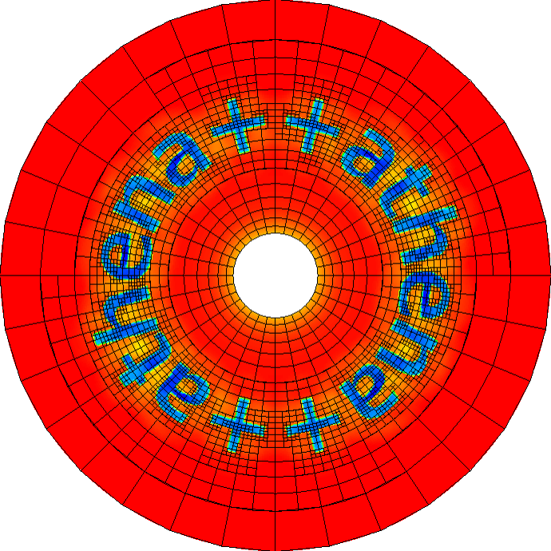

Athena++ Radiation MHD code
About
Athena++ is a complete re-write of the Athena astrophysical magnetohydrodynamics (MHD) code into C++. Compared to earlier versions, the Athena++ code has (1) much more flexible coordinate and grid options including adaptive mesh refinement, (2) new physics including general relativity, (3) significantly improved performance and scalability, and (4) improved source code clarity and modularity.

Core Developers
James M. Stone
Professor
Department of Astrophysical Sciences
Princeton University
Kengo Tomida
Assistant Professor
Department of Earth and Space Science
Osaka University
Chirstopher White
Department of Astronomy
University of California, Berkeley